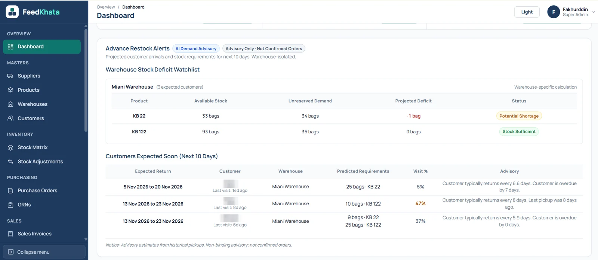

Feed Khata
Back-office software for feed traders: stock, sales, payments and demand forecasts in one place.

Overview
The problem
A feed trader keeps bags in several warehouses, sells on credit and gets paid later. Stock, sales, payments and approvals have to stay in sync every day, and one mistake throws off the books.
The solution
One system covers purchasing to payment, holds stock for each invoice, keeps every sensitive change approved and shows what each customer is likely to buy next.
My role
Defined the business rules, planned the workflows and data model, and built the system with AI-assisted development, through to daily use.
Who it’s for
Owner
Before: No single view of stock, money owed and profit.
Now: A dashboard with stock, sales, money owed and payable, and every sensitive change waiting for approval.
Sales and warehouse staff
Before: Stock promised to one customer could be sold to another.
Now: Confirming an invoice reserves the bags; pickups and returns are recorded against it.
Accounts
Before: Receipts, supplier payments and expenses tracked apart from sales and stock.
Now: Customer and supplier balances calculated from the documents themselves, with overdue customers flagged.
What it does
Purchasing
Purchase orders and goods received notes. Stock only moves after approval.
Inventory
Stock per warehouse and product, with average cost and every movement recorded.
Sales and pickups
Invoices reserve stock until it is collected, and customers can pick up in parts.
Finance
Receipts, supplier payments, expenses, balances and month-end closing.
Approvals
Returns, adjustments and goods receipts need a Super Admin decision, with the reason kept.
Reports
24 reports from the live ledgers: sales, customers, suppliers, stock, expenses and profit.
How it works
Demand forecasting
AI can explain a forecast in plain words; it never changes the numbers.
How it was built
01Research
Studied how the business buys, stores and sells feed, and where stock and money get out of sync.
02Rules
Set the business rules for approvals, credit, returns, costing and month-end closing.
03Workflows and data
Planned each document from draft to approved, and the data model that keeps stock and balances consistent.
04Build and test
Built it with AI-assisted development and checked the key flows with automated browser tests before daily use.
Screens




Key decisions
Stock that stays right
Each invoice reserves its bags in one step, so two sales can never take the same stock.
Correct, never edit
Finished invoices, receipts and stock moves are never changed. A mistake is fixed with a new, approved document.
AI advises, never decides
Forecasts come from clear statistics with their accuracy tracked; AI only explains them in plain words.
Tech stack
Where it is now
Today
In daily use by a feed-trading business since October 2026, covering purchasing, stock, sales, payments and reports.
What's next
Keep improving forecasts as new sales come in, and prepare the system to serve more than one business.
How success is measured
Books that reconcile every day, stock that matches the warehouse, and forecast accuracy tracked per product.